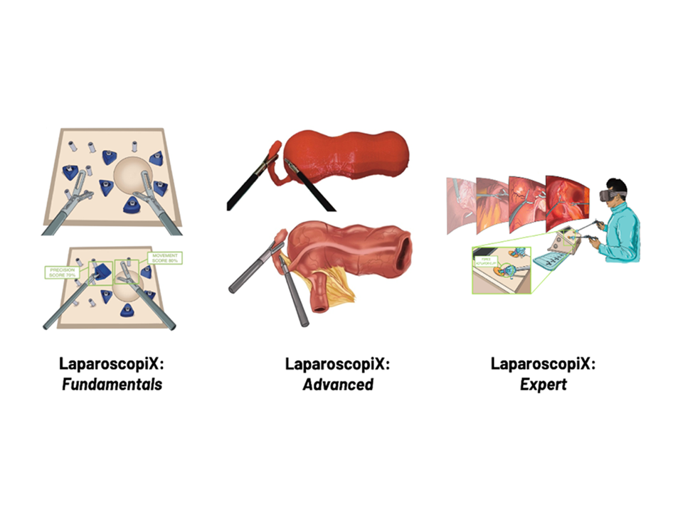
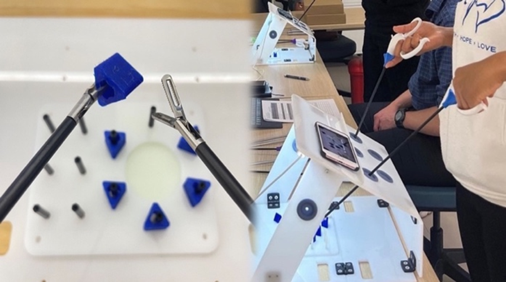
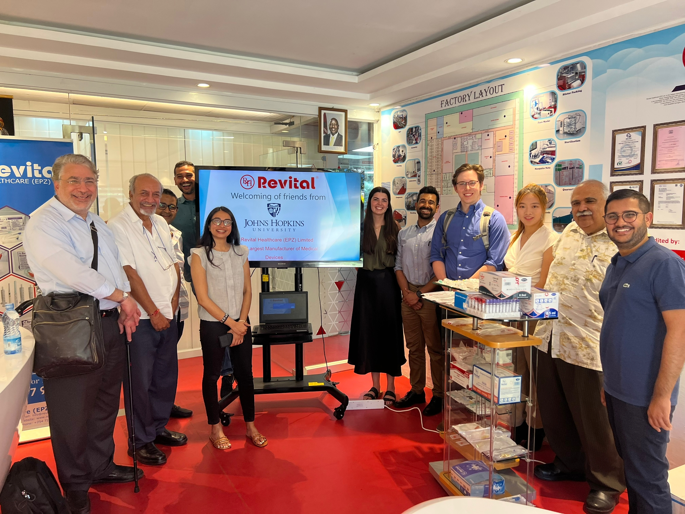

ARISE: Accelerated, Realistic, Intelligent Simulation for Surgical Education
Through collaboration with local and international stakeholders ARISE was developed as a cutting-edge surgical education platform to build surgical capacity in LMICs.
The ARISE Training Platform
ARISE is a nonprofit organization that aims to improve surgical outcomes in low- and middle-income countries (LMICs) by expanding access to laparoscopic surgery. Laparoscopic surgery is a minimally invasive surgical technique that uses small incisions and a camera to perform procedures, which has been shown to have many benefits over traditional open surgery, including reduced pain, shorter hospital stays, and faster recovery times.
However, laparoscopic surgery is often unavailable in LMICs due to a lack of trained surgeons and inadequate infrastructure. The lack of access to safe surgical care in LMICs is a significant global health issue, resulting in millions of preventable deaths each year. ARISE addresses this issue with a suite of surgical training products called LaparoscopiX. In which scalable simulations and an expert trained AI mentor are utilized to train early surgeons at various levels of competency, from fundamental skills acquisition to expert-level training. The platform provides real-time feedback to trainees through the AI mentor, trained by collaborating with leading surgical experts to establish objective standards for the algorithm. The training platform was developed in collaboration with local and international stakeholders, including leading surgical experts in the US, Canada, and Kenya, to ensure that it meets the highest standards of surgical education.
ARISE works closely with local and international stakeholders to develop and implement the educational platform, building local capacity and increasing access to laparoscopic surgery in LMICs. Their long-term vision is to expand their educational content to other surgical disciplines and support staff to further improve surgical outcomes. ARISE's long-term vision is to expand its educational content to other surgical disciplines and support staff, with the ultimate goal of improving surgical outcomes for all.
ARISE's Kenyan Deployment

The LaparoscopiX suite of products meets early surgeons at their level of compentency through a comprehensive product line.

In January 2023, the MVP of LaparoscopiX: Fundamentals was deployed in Kenya as a part of a formal usability study.

The ARISE team, as well as faculty from the Johns Hopkins Center for Bioengineering Innovation & Design, met with a local manufacturer in Kenya.